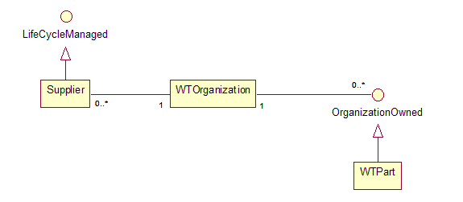

-
Interface Summary
| Interface |
Description |
| SumaVersionSelector |
An object that is used to resolve the version of a SupplierPart that should be displayed in
the user interface.
|
Package com.ptc.windchill.suma Description
Provides the core functionality for the Supplier Management (SUMA) module.
AML/AVL
The key relationships in the Supplier Management (SUMA) module are
the Approved Manufacturer and Vendor Lists, (AML and AVL,
respectively).
- Any WTPart may have both an AML and AVL associated with it.
The AML is a listing of the manufacturer parts associated with the
part, and the AVL is a listing of the vendor parts associated with the
part.
-
Manufacturer and Vendor Parts are themselves descendants of
WTPart. They both extend the abstract class SupplierPart, which extends
WTPart. This means that manufacturer and vendor parts can themselves
have AMLs and AVLs associated with them, though that is not supported
through the OOTB UI.
- When a WTPart has an AML or AVL associated with it, it is
referred to as the "OEM Part" for that AML and AVL. OEM stands for
Original Equipment Manufacturer.
- The AML and AVL are interconnected -- each manufacturer part
in the AML may be purchased through several vendors, represented by
corresponding vendor parts in the AVL.
- It is possible to have vendor parts that do not have
corresponding manufacturer parts, and vice versa. For example a company
may not care where they get certain simple bulk parts from, like bolts,
but just who to buy them from.
- There is a loose coupling between the source attribute of
the OEM part and the AML/AVL functionality. Typically, the AML/AVL only
apply to "buy" parts, though customers can configure the sources for
which the AML/AVL is available.
- The SUMA install adds an additional source, called "Buy -
Single Source", that indicates that it is acceptable to have a single
AML entry for the oem part. If a part is single sourced and doesn't
have this source attribute, then warnings are presented to the user
when viewing the oem part
Sourcing Status
- The manufacturer and vendor parts in an AML/AVL have a
sourcing status associated with them. The OOTB statuses are Preferred,
Approved, and Do Not Use.
- The statuses are defined within a Sourcing Context. For
example, a given part may be Preferred in Mexico, but Approved in
Japan.
- Sourcing contexts are defined at the organization level.
Modifying the AML/AVL
- Supplier administrators can modify or create an OEM part's
AML/AVL without iterating the OEM part. Supplier administrators are
defined at the org container level by org and site administrators.
- Non-supplier administrators can modify the AML/AVL by
checking out the OEM part first. However, this behavior can be
controlled with a wt.property. Customers can change the behavior to
simply require that users have modify access to the OEM part in order
to modify the AML/AVL
- Since the OEM part iterations do not necessarily track
AML/AVL changes, these changes are always recorded in a special AML/AVL
change history table. Users can access this table from the OEM part
details page.
Object model
- The AXLEntry class maps together a given oem part with an AML
part, an AVL part, and a sourcing context. The AXLEntry need not have
both a manufacturer part and vendor part, it just needs to have one of
them.
Suppliers (Manufacturers and Vendors)
- Manufacturer and Vendor parts must be created within a
pre-existing supplier. A Supplier is an object managed at the org
container level that points to a WTOrganization. It is via the
WTOrganization that a given supplier part is linked to its supplier.
- The value of the supplier object is that it allows each org container to lifecycle manage suppliers independently.
Object Model

Rules
- To ease administration, supplier administrators can define
sourcing rules that apply sourcing statuses to a group of supplier
parts at once. Rules can be defined for a given supplier/sourcing
context pair, or a supplier/sourcing context/classification node
combination.
Typing
- Suppliers and Sourcing Contexts are soft typed, and the OOTB
UI supports automatic display of the soft typed attributes in create,
edit, and view
Spreadsheets
- As of 8.0 M30, you can import/export the AML/AVL of a collection of OEM parts from an Excel spreadsheet.